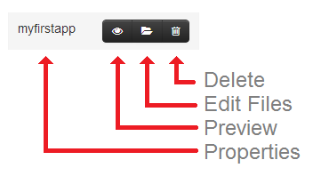
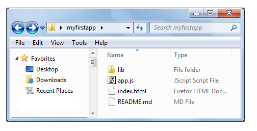

The Admin Console is where you can administer all of the various backend services for your
project. You can build applications, manage users, assign roles, create schema, and connect external services as
needed. Your job is to build a front end application that uses these services. Let's get started!
Give your app a name. Your app name will be your API key.
What kind of app are you building?
Web-based applications run in the browser and use HTML5 and Javascript. Native applications run as compiled code on a mobile device or desktop / server application.
Web
Native
Some developers like to edit all of their HTML, CSS, and JavaScript files on the local computer and then upload them to the DreamFactory Services Platform for deployment. This option makes debugging simpler and allows the use of desktop development tools. Other developers like to edit the hosted application files right here in the Admin Console. This option allows the app to be run immediately. You can always switch back and forth between these methods as needed.
Where do you want to develop your app?
On my local computer (edit code on my
desktop)
Here in the Admin Console (edit code in my
browser)
The DreamFactory Javascript SDK
What's in the SDK?
The Javascript SDK is a convenience wrapper for all the methods in our REST API. The SDK contains your REST endpoint and API key so you can start coding immediately. When a new service is provisioned in the Admin Console the JavaScript SDK will automatically include that service the next time your application is loaded.
Access the SDK by using the "df" object. You can see the "df" object in your debugger by opening up the DOM inspection tab. The "df" object is attached to the "window" object. For example, using Chrome's Dev Tools, open the console and start typing "window.df.apis" to display all the methods and properties.
Use of this SDK on the local file system requires "*" to be in your list of allowed hosts in the CORS configuration section of the Admin app.
Congratulations
Your app has been created! When you select the "Apps" tab from the list of options at left you will see your
new application in the list, as well as some other example projects.
By clicking on the various icons you can change application properties, preview your application, edit the
hosted files, or delete the application. In the file editor you will see your "index.html" file. This has
some example code to help you get started calling the services. There is also a "ReadMe" file with
additional information.
Explore the other tabs at left to manage users, assign roles, create schema, and connect external services
to your application!

We have created a backend for your application. Click the "Download" button below and save the DreamFactory
Javascript SDK to your desktop. Unzip the file into a local folder to create a workspace for building your
application. To get started run the "index.html" file in a browser, we have included example code there to
help you get started calling the services. There is also a "ReadMe" file with additional information.
You can return to the Admin Console at any time and explore the other tabs at left to host your application,
manage users, assign roles, create schema, and connect external services!
What's in the SDK?
The DreamFactory Javascript SDK Requires version 1.1 or above of the DreamFactory Services Platform. The
SDK is a convenience wrapper for all the methods you can use with our REST API. It's also a LIVE API,
meaning any services you add in the DreamFactory Admin Console will be available the next time your
application is loaded.
The SDK contains your REST endpoint and API key already inside, so no configuration is needed. Just start
coding.
You can see the "df" object in your debugger. Underneath "df.apis" you'll see all the available resources
and methods simply by opening up the DOM inspection tab and scrolling down to the "df" object. As a
global object, it's attached to the window object. For example, using Chrome's Dev Tools, simply open
the console and start typing "window.df.apis" and its typeahead will display all the methods and
properties.
Use of this SDK on the file system requires "*" to be in your list of allowed hosts in the CORS
configuration section of the Admin app.

Please consult your native device development environment for the best way to make REST API calls to the
DreamFactory Services Platform. You can select either JSON or XML documents for request and response.
The details of technical integration are explained on the "API / SDK" tab at left. This interface shows
the available services and example transactions along with detailed documentation.
You can return to the Admin Console at any time and explore the other tabs at left to manage users,
assign roles, create schema, and connect external services. When new services are added to the platform
then they are reflected in the Live REST API and SDK Documentation. Use the Admin Console to
interactively create and test services before calling them from your native application.
Please see the DreamFactory website for more information on building native applications and calling the
services.